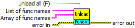

Owning Palette: FuncVI Service
The VI can be used to explicitly unload FuncVIs from memory.
If CalcExpress opens a VI reference to a FuncVI (thereby it loads the FuncVI to memory), the reference is opened until the top level VI in its callers hierarchy stops. You can use this VI to close VI references to FuncVIs used by CalcExpress. This causes FuncVIs to be unloaded if there are no other opened references to them. Note that CalcExpress implicitly load a FuncVI if a call of corresponding function is performed.
 |
Click the parameters for more information |